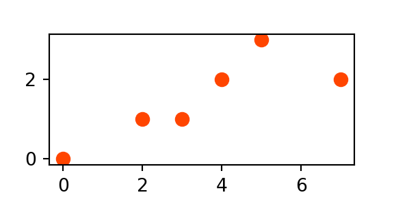
WKT и WKB
Геоинформатика I. Базы пространственных данных
Well-Known Text (WKT)
Well-Known Text (WKT) — формальный язык описания геометрий, который используется для
создания новых экземпляров геометрии;
конвертации экземпляров в алфавитно-цифровую текстовую форму для отображения и сериализации.
Сериализация
Преобразование состояния объекта в форму, пригодную для сохранения или передачи. Обратный процесс называется десериализацией.
WKT используется для описания не только геометрий, но также пространственных систем отсчета.
WKT является регистронезависимым: POINT, Point и point — это одно и то же.
Формальная грамматика
- Алфавит
-
Множество неделимых (атомарных) символов
- Слово
-
Конечный упорядоченный набор (кортеж) символов из заданного алфавита
- Формальный язык
-
Множество конечных слов над конечным алфавитом
- Синтаксис
-
Совокупность правил, упорядочивающих структуру предложений
- Формальная грамматика
-
Способ формирования из алфавита языка строк (слов, словосочетаний, предложений) в соответствии с его синтаксисом
Производящее правило
- Производящее правило
-
Правило замены символов, которое может применяться для генерации новой последовательности символов
- Терминальные символы
-
Символы, входящие в алфавит
- Нетерминальные символы
-
Заменяются группой терминальных символов в соответствии с производящими правилами
Форма Бэкуса-Наура (БНФ)
Форма Бэкуса-Наура (БНФ) — формальная грамматика с последовательным определением синаксических категорий через производящие правила вида:
<symbol> ::= expression
<symbol>— нетерминальный символ (переменная)::=— оператор замены символа слева (<symbol>) на выражение справа (expression).expression— выражение, которое состоит из одной и более альтернативных последовательностей терминальных или нетерминальных символов (токенов)|— символ, используемый для разделения альтернативных последовательностей в выраженииexpression
Угловые скобки (
<>)
В нотации Бэкуса-Наура нетерминальные символы всегда заключаются в угловые скобки (<>).
Форма Бэкуса-Наура (БНФ)
БНФ базируется на следующих обозначениях:
{} |
Опциональный (необязательный) токен; фигурные скобки используются для обозначения и не являются частью токена |
() |
Группировка последовательности токенов в один токен; круглые скобки используются для обозначения и не являются частью токена |
* |
Опциональное (необязательное) использование множества экземпляров токена |
| |
Разделитель альтернативных токенов; не включается в результат |
<> |
Определяемый нетерминальный токен |
::= |
Оператор, обозначающий производящее правило: левый операнд может быть заменен на правый. |
| Последовательность символов без обозначений представляет собой терминальный токен |
Определение WKT
<empty set> ::= EMPTY |
<left paren> ::= ( |
<right paren> ::= ) |
<comma> ::= , |
<period> ::= . |
<decimal point> ::= . |
<digit> ::= 0|1|2|3|4|5|6|7|8|9 |
<plus sign> ::= + |
<minus sign> ::= - |
<sign> ::= <plus sign> | <minus sign> |
<unsigned integer> ::= (<digit>)* |
<signed integer> ::= {<sign>}<unsigned integer> |
Разложение целого со знаком
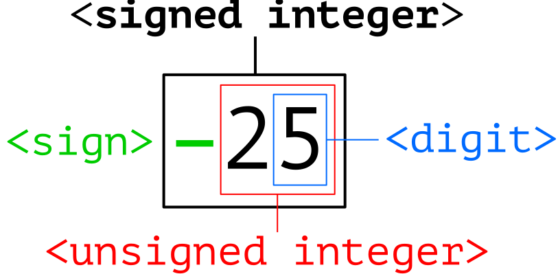
Определение WKT
<exact numeric literal> ::= <unsigned integer> {<decimal po int>{<unsigned integer>}}|<decimal point><unsigned integer> |
<mantissa> ::= <exact numeric literal> |
<exponent> ::= <signed integer> |
<approximate numeric literal> ::= <mantissa>E<exponent> |
<unsigned numeric literal> ::= <exact numeric literal> | <approximate numeric literal> |
<signed numeric literal> ::= {<sign>}<unsigned numeric literal> |
<x> ::= <signed numeric literal> |
<y> ::= <signed numeric literal> |
<z> ::= <signed numeric literal> |
<m> ::= <signed numeric literal> |
Разложение действительного числа
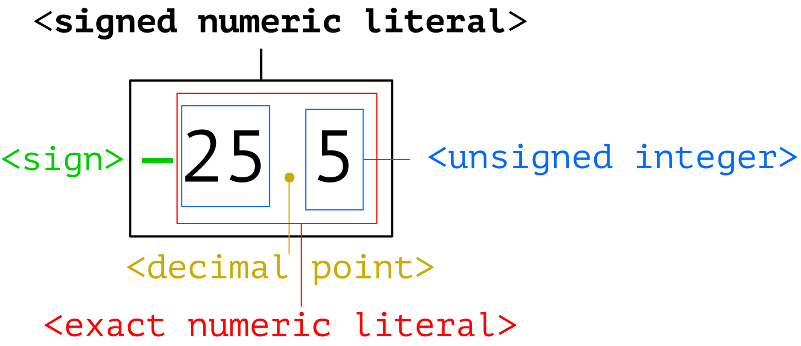
Определение \(2D\)-геометрий
<point> ::= <x> <y> |
|
<point tagged text> ::= point <point text> |
<linestring text> ::= <empty set> | <left paren> <point> {<comma> <point>}* <right paren> |
<linestring tagged text> ::= linestring <linestring text> |
|
<polygon tagged text> ::= polygon <polygon text> |
<triangle tagged text> ::= triangle <polygon text> |
Разложение \(2D\)-точки
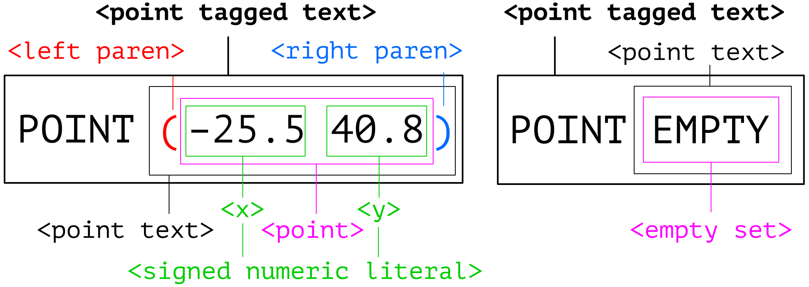
Для остальных классов пустая (EMPTY) геометрия описывается аналогичным образом: LINESTRING EMPTY, POLYGON EMPTY и т.п.
Разложение \(2D\)-линии и полигона
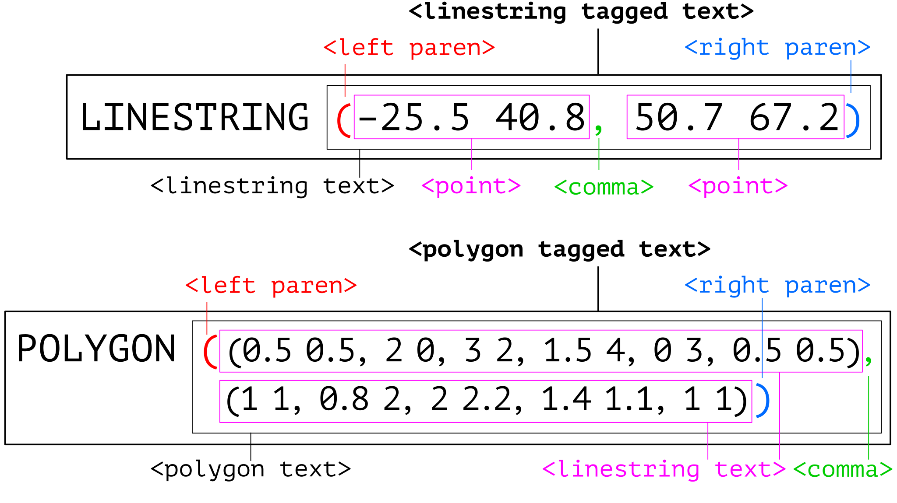
Определение \(2D\)-геометрий
<polyhedralsurface text> ::= <empty set> | <left paren> <polygon text> {<comma> <polygon text>}* <right paren> |
<polyhedralsurface tagged text> ::= polyhedralsurface <polyhedralsurface text> |
<tin tagged text> ::= tin <polyhedralsurface text> |
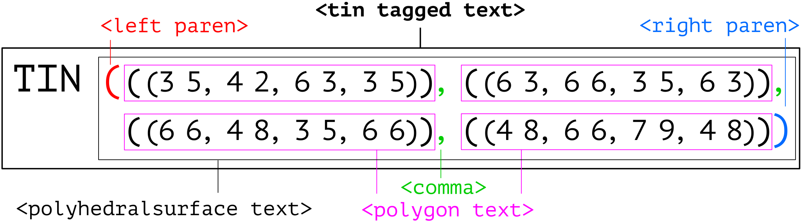
Определение \(2D\)-коллекций
|
<multipoint tagged text> ::= multipoint <multipoint text> |
<multilinestring text> ::= <empty set> | <left paren> <linestring text>{<comma> <linestring text>}* <right paren> |
<multilinestring tagged text> ::= multilinestring <multilinestring text> |
|
|
Разложение \(2D\)-мульти[точки|линии]
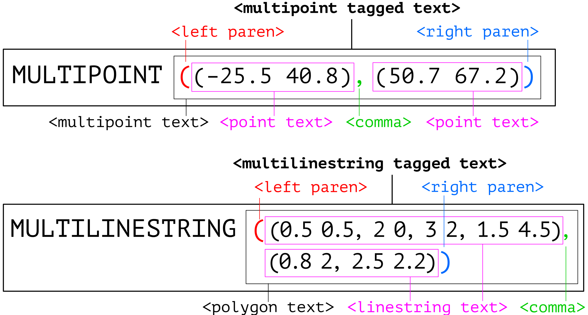
Разложение \(2D\)-мультиполигона
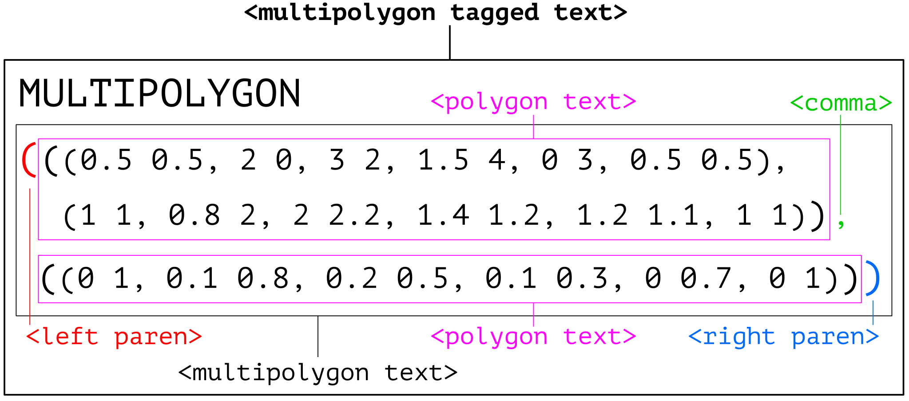
Определение \(2D\)-GEOMETRYCOLLECTION
|
<geometrycollection text> ::= <empty set> | <left paren> <geometry tagged text> {<comma> <geometry tagged text>}* <right paren> |
<geometrycollection tagged text> ::= geometrycollection <geometrycollection text> |
Разложение \(2D\)-GEOMETRYCOLLECTION
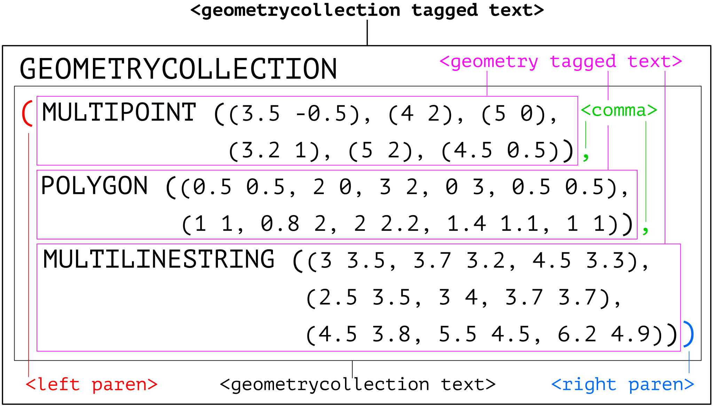
Определение \(3D/4D\)-геометрий и коллекций
Идентично \(2D\) со следующими модификациями:
Количество координат равно числу измерений (\(3\) или \(4\))
После названия tagged-геометрии добавляется расширение
z,mилиzm:
point z,linestring m,polygon zm.
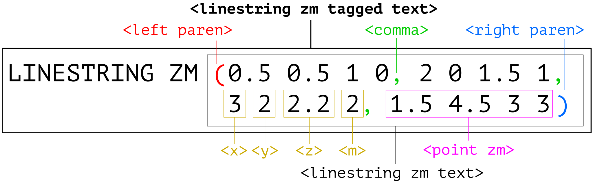
Дополнительные измерения
Стандартные геометрические операции и топологические предикаты игнорируют дополнительные измерения \(ZM\).
Не существует ограничений на координату \(M\) — она, в частности, не обязана непрерывно возрастать вдоль объекта
LINESTRING.Интерфейс объектов с \(M\)-геометрией содержит дополнительные методы
LocateAlong()иLocateBetween().
| Метод | Назначение |
|---|---|
LocateAlong(m) |
Возвращает производную геометрическую коллекцию, которая соответствует m |
LocateBetween(m1, m2) |
Возвращает производную геометрическую коллекцию, которая соответствует отрезку [m1, m2] |
Дополнительные измерения
Запрос измерения мультиточечного объекта:
p: MULTIPOINT M(0 0 4, 2 1 1, 3 1 2, 4 2 4, 5 3 5, 7 2 7)
p.LocateAlong(4): MULTIPOINT M(0 0 4, 3 1 4)
p.LocateBetween(2,4): MULTIPOINT M(0 0 4, 2 1 2, 3 1 4)
p.LocateAlong(3): POINT M EMPTY — пустой объект
Дополнительные измерения
Запрос измерения линейного объекта :
l: MULTILINESTRING M((0 0 4, 2 1 1, 3 1 2), (4 2 4, 5 3 6))
l.LocateAlong(3): MULTIPOINT M(1.3 0.7 3)
l.LocateBetween(2,5): GEOMETRYCOLLECTION M(LINESTRING M(0 0 4,1.33 0.67 2),POINT M(3 1 2),LINESTRING M(4 2 4,4.5 2.5 5))
l.LocateAlong(0.5): POINT M EMPTY — пустой объект
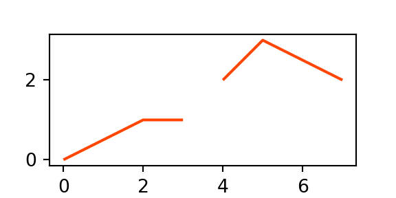
Well-Known Binary (WKB)
Well-Known Binary (WKB) — компактное представление геометрического объекта в виде непрерывной последовательности байтов.
Позволяет обмениваться пространственными данными в бинарной форме
Реализуется путем представления геометрического объекта в виде последовательности чисел типов
{Unsigned Integer, Double}и их сериализации в последовательность байтовДля сериализации используется порядок байтов с большого (Big Endian) или малого (Little Endian) конца.
Unsigned Integer — \(32\)-битный (\(4\)-байтовый) тип данных, который представляет неотрицательные целые числа в диапазоне [0, 4 294 967 259]
Double — \(64\)-битный (\(8\)-байтовый) тип данных, который представляет числа с плавающей точкой двойной точности стандарта IEEE 754.
Коды геометрических типов
| Тип | XY | XYZ | XYM | XYZM |
GEOMETRY |
0 |
1000 |
2000 |
3000 |
POINT |
1 |
1001 |
2001 |
3001 |
LINESTRING |
2 |
1002 |
2002 |
3002 |
POLYGON |
3 |
1003 |
2003 |
3003 |
MULTIPOINT |
4 |
1004 |
2004 |
3004 |
MULTILINESTRING |
5 |
1005 |
2005 |
3005 |
MULTIPOLYGON |
6 |
1006 |
2006 |
3006 |
GEOMETRYCOLLECTION |
7 |
1007 |
2007 |
3007 |
| \(\texttt{CIRCULARSTRING}^ \star\) | 8 |
1008 |
2008 |
3008 |
| \(\texttt{COMPOUNDCURVE}^\star\) | 9 |
1009 |
2009 |
3009 |
| \(\texttt{CURVEPOLYGON}^\star\) | 10 |
1010 |
2010 |
3010 |
\(\star\) — зарезервированные типы
Коды геометрических типов
| Тип | XY | XYZ | XYM | XYZM |
MULTICURVE |
11 |
1011 |
2011 |
3011 |
MULTISURFACE |
12 |
1012 |
2012 |
3012 |
CURVE |
13 |
1013 |
2013 |
3013 |
SURFACE |
14 |
1014 |
2014 |
3014 |
POLYHEDRALSURFACE |
15 |
1015 |
2015 |
3015 |
TIN |
16 |
1016 |
2016 |
3016 |
Классы WKBGeometry
Базовые определения типов
// byte : 1 byte
// uint32 : 32 bit unsigned integer (4 bytes)
// double : double precision number (8 bytes) Точки
Point {
double x;
double y;
}
PointZ {
double x;
double y;
double z;
} Определения используют синтаксис, похожий на язык программирования C.
PointM {
double x;
double y;
double m;
}
PointZM {
double x;
double y;
double z;
double m;
}Классы WKBGeometry
Линейные кольца
LinearRing {
uint32 numPoints;
Point points[numPoints];
}
LinearRingZ {
uint32 numPoints;
PointZ points[numPoints];
}
LinearRingM {
uint32 numPoints;
PointM points[numPoints];
}
LinearRingZM {
uint32 numPoints;
PointZM points[numPoints];
}Порядок байтов
enum WKBByteOrder {
wkbXDR = 0, // Big Endian
wkbNDR = 1 // Little Endian
}Порядок байтов определяет последовательность представления байтов в памяти компьютера:
Big Endian (BE) — от большего к меньшему
Littel Endian (LE) — от меньшего к большему
В современных компьютерах машинное слово \(64\)-битное и состоит из \(8\) байтов.
Endians
\(255 = 2^8 - 1\) — максимальное число, которое можно записать в один байт.
Произвольное число можно разложить по байтам:
\[ M = \sum_{i=0}^{n-1}A_i\cdot 256^i=A_0\cdot 256^0+A_1\cdot 256^1+A_2\cdot 256^2+\dots+A_{n-1}\cdot 256^{n-1}. \]
\(A_0,\dots,A_{n-1}\) — целые числа в диапазоне от \(0\) до \(255\)
\(A_0\) — младший (little) байт
\(A_{n-1}\) — старший (big) байт
Число \(11789422_{10}\) (\(\texttt{0x}\color{red}{\texttt{B3}}\color{green}{\texttt{E4}}\color{blue}{\texttt{6E}}_{16}\)) можно записать двумя способами:
| \(\texttt{Big Endian}\) | \(\color{red}{A_{n-1}}...\color{green}{A_1}\color{blue}{A_0} \rightarrow \color{red}{\texttt{1011 0011}}~\color{green}{\texttt{1110 0100}}~\color{blue}{\texttt{0110 1110}}\) |
| \(\texttt{Little Endian}\) | \(\color{blue}{A_0}\color{green}{A_1}...\color{red}{A_{n-1}} \rightarrow \color{blue}{\texttt{0110 1110}}~\color{green}{\texttt{1110 0100}}~\color{red}{\texttt{1011 0011}}\) |
IEEE 754 binary64
Число двойной точности записывается из трёх компонент:
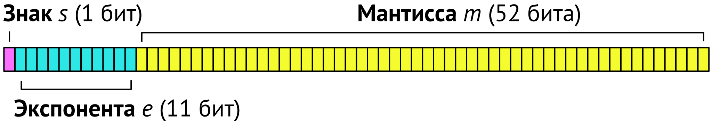
Для конвертации из бинарной в десятичную форму используется соотношение:
\[ (-1)^s \cdot \bigg(1 + \frac{m}{2^{52}}\bigg) \cdot 2^{e-1023} \]
| Порядок числа | от \(10^{-307}\) до \(10^{307}\) |
| Точность, десятичных знаков | 16 |
Классы WKBGeometry
WKBPoint {
byte byteOrder;
static uint32 wkbType = 1;
Point point
}
WKBLineString {
byte byteOrder;
static uint32 wkbType = 2;
uint32 numPoints;
Point points[numPoints]
}
WKBPolygon {
byte byteOrder;
static uint32 wkbType = 3;
uint32 numRings;
LinearRing rings[numRings]
}WKBTriangle {
byte byteOrder;
static uint32 wkbType = 17;
uint32 numRings;
LinearRing rings[numRings]
}
WKBPolyhedralSurface {
byte byteOrder;
static uint32 wkbType = 15;
uint32 numPolygons;
WKBPolygon polygons[numPolygons]
}
WKBTIN {
byte byteOrder;
static uint32 wkbType = 16;
uint32 numPolygons;
WKBPolygon polygons[numPolygons]
}Классы WKBGeometry
WKBMultiPoint {
byte byteOrder;
static uint32 wkbType=4;
uint32 numPoints;
WKBPoint points[numPoints]
}
WKBMultiLineString {
byte byteOrder;
static uint32 wkbType = 5;
uint32 numLineStrings;
WKBLineString lineStrings[numLineStrings]
}
WKBMultiPolygon {
byte byteOrder;
static uint32 wkbType = 6;
uint32 numPolygons;
WKBPolygon polygons[numPolygons]
}WKBGeometryCollection {
byte byte_order;
static uint32 wkbType = 7;
uint32 numGeometries;
WKBGeometry geometries[numGeometries]
}
WKBGeometry {
Union {
WKBPoint point;
WKBLineString linestring;
WKBPolygon polygon;
WKBTriangle triangle
WKBPolyhedralSurface polyhedralsurface;
WKBTIN tin WKBMultiPoint mpoint;
WKBMultiLineString mlinestring;
WKBMultiPolygon mpolygon;
WKBGeometryCollection
collection;
}
}Пример
WKBPoint {
byte byteOrder;
static uint32 wkbType = 1;
Point point
}
Point {
double x;
double y;
}
POINT (1.3 2.7)
Little Endian: 01 01000000 CDCCCCCCCCCCF43F 9A99999999990540
Big Endian x: 3FF4CCCCCCCCCCCD =
0 01111111111 0100 1100 1100 1100 1100 1100 1100
1100 1100 1100 1100 1100 1101
По основанию 10: 0 1023 1351079888211149
(s) (e) (m)\[ (-1)^0 \cdot \bigg(1 + \frac{1351079888211149}{4 503 599 627 370 496} \bigg) \cdot 2^{1023-1023} = 1 \cdot (1 + 0.3) \cdot 2^0 = 1.3 \]
Что это?
0105000000020000000102000000
03000000000000000000E0BF9A99
9999999905406666666666662240
9A99999999992140000000000000
2840CDCCCCCCCCCC08C001020000
00020000000000000000000C4000
0000000000044066666666666622
400000000000000000Определите тип и координаты данного объекта.
Представьте результат в формате WKT.
Подсказка
Данные представлены в шестнадцатеричной системе в формате Little Endian